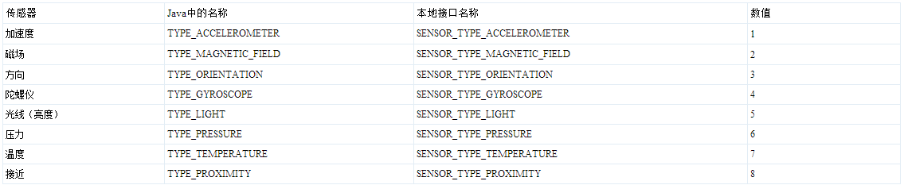

Sensor传感器源码的阅读与应用开发简单实例
Android系统支持多种传感器。应用到各个层次，有的传感器已经在Android的框架中使用，大多数传感器由应用程序中来使用。
一．Android中支持的传感器类型：

二．Android 系统的代码分布情况：
1）传感器系统的java代码
代码路径：framework/base/core/java/android/hardware中
目录中包含了Camera 和Sensor两部分，Sensor部分的内容为Sensor*.java 文件。
2）传感器系统的JNI部分
代码路径： framework/base/core/jni/android_hardware_SensorManager.cpp
本部分提供了android.hardware.Sensor.Manager 类的本质支持。
3）传感器系统硬件层实现的接口
头文件路径：hardware/libhardware/include/hardware/sensors.h
传感器系统的硬件抽象层需要各个系统根据sensors.h中定义的接口去实现
Sensor部分的内容还包含了底层部分的驱动和硬件抽象层，以及上层对Sensor的调用部
三.Android的Sensor源码解析：
Android中的Sensor的主要文件为：Sensor.java 单一传感器描述文件
SensorEvent.java 传感器系统的时间类
SensorEventListener.java 传感器监听事件（是一个接口）
SensorListener.java 传感器监听（接口）
SensorManager.java 传感器的核心管理类
Sensor.java中定义的是传感器常量的一些类型，如public static final TYPE_MAGNETIC_FIELD=2; 等，具体参数参照传感器类型。
SensorManager.java
public Sensor getDefaultSensor(int type){获得默认的传感器}public List<Sensor> getSensorList(int type) {获得传感器列表}
public boolean registerListener(SensorListener listener, int sensors) {
return registerListener(listener, sensors, SENSOR_DELAY_NORMAL);
} // 注册监听事件
public void unregisterListener(SensorListener listener, int sensors) {注销监听事件}
时间关系，源码不逐一说了，大家自己有下个源码看下，如果没有源码的，给我个邮箱我给大家发这部分代码，直接上个简单的DEMO供大家认识下，好像这块的代码，在IBM的一个网站上也能找到！
四。程序代码
1）SensorActivity.java代码：
import android.app.Activity;import android.hardware.SensorEventListener;
import android.hardware.SensorListener;
import android.hardware.SensorManager;
import android.os.Bundle;
import android.util.Log;
import android.widget.TextView;
public class SensorActivity extends Activity implements SensorListener {
final String tag = "SensorActivity";
SensorManager sm = null;
TextView xViewA = null;
TextView yViewA = null;
TextView zViewA = null;
TextView xViewO = null;
TextView yViewO = null;
TextView zViewO = null;
/** Called when the activity is first created. */
@Override
public void onCreate(Bundle savedInstanceState) {
super.onCreate(savedInstanceState);
setContentView(R.layout.main);
sm = (SensorManager) getSystemService(SENSOR_SERVICE);
xViewA = (TextView) findViewById(R.id.xbox);
yViewA = (TextView) findViewById(R.id.ybox);
zViewA = (TextView) findViewById(R.id.zbox);
xViewO = (TextView) findViewById(R.id.xboxo);
yViewO = (TextView) findViewById(R.id.yboxo);
zViewO = (TextView) findViewById(R.id.zboxo);
}
@Override
public void onAccuracyChanged(int sensor, int accuracy) {
Log.d(tag, "onAccuracyChanged: " + sensor + ", accuracy: " + accuracy);
}
@Override
public void onSensorChanged(int sensor, float[] values) {
synchronized (this) {
Log.d(tag, "onSensorChanged: " + sensor + ", x: " + values[0]
+ ", y: " + values[1] + ", z: " + values[2]);
if (sensor == SensorManager.SENSOR_ORIENTATION) {
xViewO.setText("Orientation X: " + values[0]);
yViewO.setText("Orientation Y: " + values[1]);
zViewO.setText("Orientation Z: " + values[2]);
}
if (sensor == SensorManager.SENSOR_ACCELEROMETER) {
xViewA.setText("Accel X: " + values[0]);
yViewA.setText("Accel Y: " + values[1]);
zViewA.setText("Accel Z: " + values[2]);
}
}
}
@Override
protected void onResume() {
super.onResume();
sm.registerListener(this, SensorManager.SENSOR_ORIENTATION
| SensorManager.SENSOR_ACCELEROMETER,
SensorManager.SENSOR_DELAY_NORMAL);
}
@Override
protected void onStop() {
sm.unregisterListener(this);
super.onStop();
}
}
2）main.xml 布局文件（简单的放些TextView）
<?xml version="1.0" encoding="utf-8"?><LinearLayout xmlns:android="http://schemas.android.com/apk/res/android
android:layout_width="fill_parent
android:layout_height="fill_parent
android:orientation="vertical" >
<TextView
android:layout_width="fill_parent
android:layout_height="wrap_content
android:text="@string/hello" />
<TextView
android:layout_width="fill_parent
android:layout_height="wrap_content
android:text="Accelerometer" />
<TextView
android:id="@+id/xbox
android:layout_width="fill_parent
android:layout_height="wrap_content
android:text="X Value" />
<TextView
android:id="@+id/ybox
android:layout_width="fill_parent
android:layout_height="wrap_content
android:text="Y Value" />
<TextView
android:id="@+id/zbox
android:layout_width="fill_parent
android:layout_height="wrap_content
android:text="Z Value" />
<TextView
android:layout_width="fill_parent
android:layout_height="wrap_content
android:text="Orientation" />
<TextView
android:id="@+id/xboxo
android:layout_width="fill_parent
android:layout_height="wrap_content
android:text="X Value" />
<TextView
android:id="@+id/yboxo
android:layout_width="fill_parent
android:layout_height="wrap_content
android:text="Y Value" />
<TextView
android:id="@+id/zboxo
android:layout_width="fill_parent
android:layout_height="wrap_content
android:text="Z Value" />
</LinearLayout>
五：在模拟器开发测试Sensor要注意，必须要装个传感器插件，才能看到效果，可能有部分手机硬件驱动是不支持Sensor的，不过市面上流行的品牌手机一般都支持！
抽空首次整理做的教程，有不好的地方，不吝指正!